人生中第一次拥有自己的10亿，会发生在什么时候？
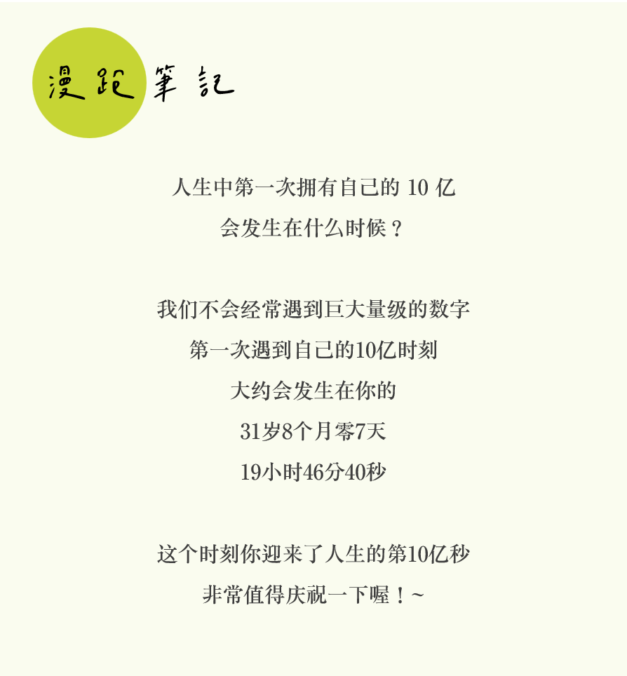
我的10亿时光，恰逢这几年经济down到低谷。身边的中年人都说想死，尤其是金融行业的，被裁员的坐在飞机上，真希望飞机就这么坠毁；还没被裁员的，在超高层办公楼里无意义的斗争中耗费精力，想跳下去一了白了。
当然不用担心，他们不会真的去寻死，只是极端厌世的一种口语化表达。中产阶级的空虚和迷茫，并非是对所得之物的否定，而是不断追求欲望过程中，难免会产生的厌倦。
我也会因为工作和生活没有意外、惊喜和挑战想quit。就像打游戏卡在中间某个关卡折腾，耐心被磨光后破口大骂什么烂玩意儿。
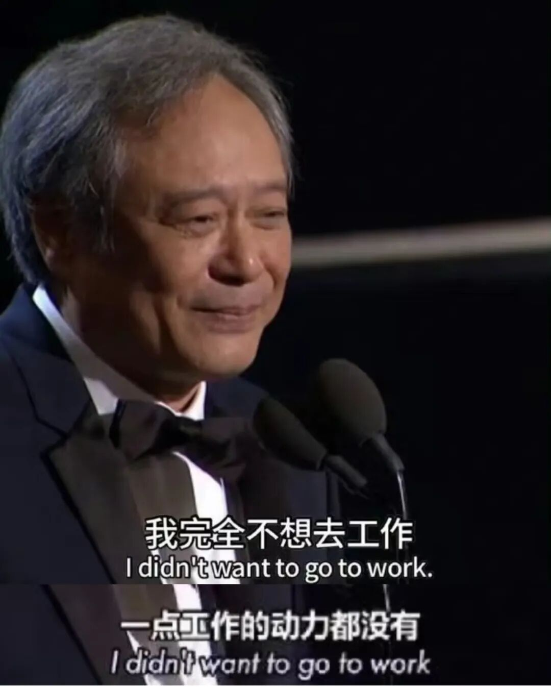
听说李安在拍《断背山》时
也会早上起不来，每天至少三次想放弃
但如果不继续拍戏
呆在家里的日常就是被老婆嫌弃
我意识到或许人的衰老，不是从身体发肤、眼角的纹路或是斑白的两鬓开始的，是从“灵气”消散开始的：不再热烈地爱了不再为微风和云朵欣喜了不再愿意表达内心的渴望了不再对世界有细微的感动了……于是人就老了
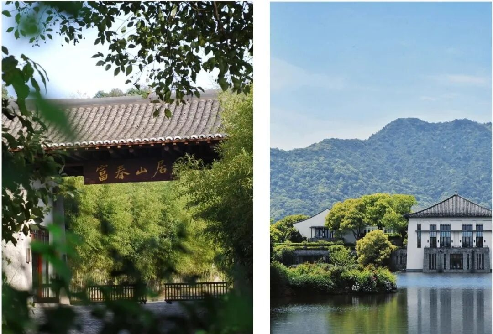
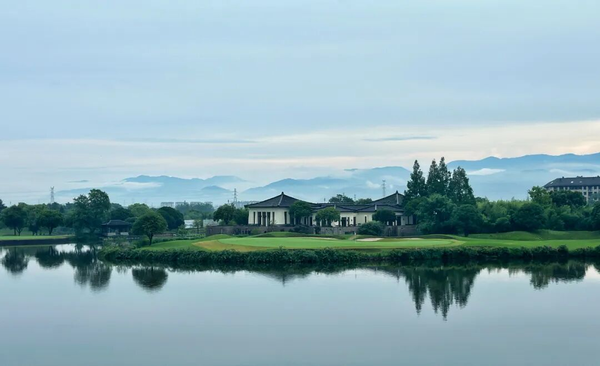
去年趁意大利 summer break 的时候，我带一大家人去富春山居度假。毕竟针对这样的垃圾时间，When you focus on you, you grow.When you focus on shit, shit grows.
富春江沿岸的富春方外酒店、康莱德等酒店我都住过，但我只推荐富春山居。原因是风水绝佳，我住了一段时间就感到丢失的“灵气”都回来了！！！
这个理由虽然很中年，但还是要叮嘱大家一定要加点钱订二楼的套房。晨起梳妆时推开窗，只要你看见富春江水和远处云雾里若隐若现的群山，再迟钝的人也会拥有诗人的心肠。
本以为度假 “什么都不做” 就是幸福的，没想到我第一次真正意义上的跑步就此开始！
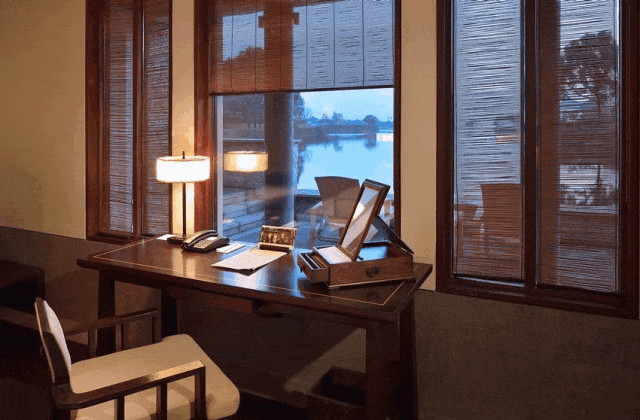
教我跑步的师傅，是在此风水宝地长大的庄总，他日常就在富春江边奔跑，最近一小时完成6公里的登山跑，体力惊人。逢人就安利跑步的好，但临安的生意人只热衷于酒局牌局，只有我想试试。
对于第一次跑步的我，庄总建议我先跑3KM。
初学者设立跑步的目标很重要，确切说 —— 按照自己的需求建立内心的秩序很重要：我的秩序是按照 “我” 自己的需求建立的，我的脑海中的声音是“我” 真正的渴望，不再是命令。
从此，“我” 不允许自己每跑1KM就停下来；从此，“我” 也无需在意速度，不做外部目标的奴隶，眼下专注于跑完这3KM就行了。
这是非常便于实操的方法论，甚至渐渐地，你会发现自己能够有意识地在日常工作和生活中运用，舍弃掉自己不想要的，找到自己的路，在追随自我目标的努力中，获得内心的秩序和成长的乐趣。
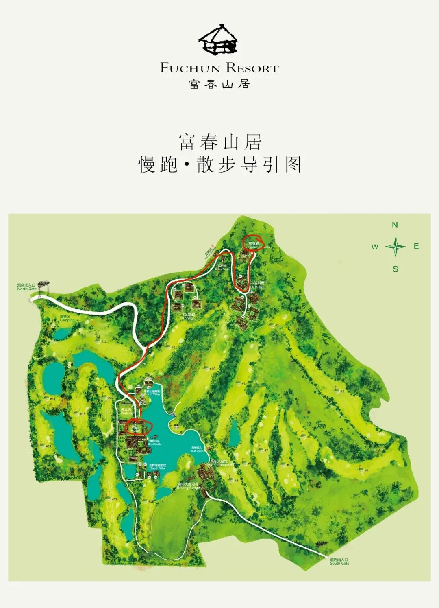
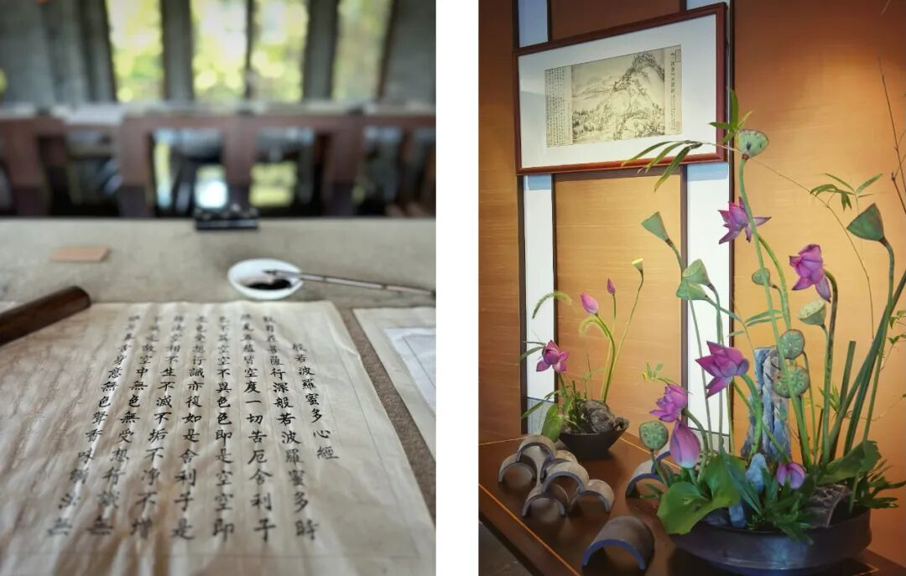
杭州的酒店主打风景和疗愈精心设计的跑步路线从大堂一路向山上跑，最高处就是富春阁可以俯瞰富春江，可以在阁内抄经
其次，找到一条绝佳的跑步路线也很重要。
我们一般只能在跑步机上训练，能像庄总这般自由地在山间奔跑是极为珍贵的。这世界上所有的美好，似乎都不那么理所应当。
城里人鲜有机会在车水马龙的清晨亲近纯粹的自然，可是我却觉得，想要自我疗愈，什么都比不上抽空在这样的山间听一听风声，闻一闻植物原始的气味。夏天的山里潮湿又清凉，很难描述的感官的体验，有一种神秘又广阔、笼罩天地间的“气”。
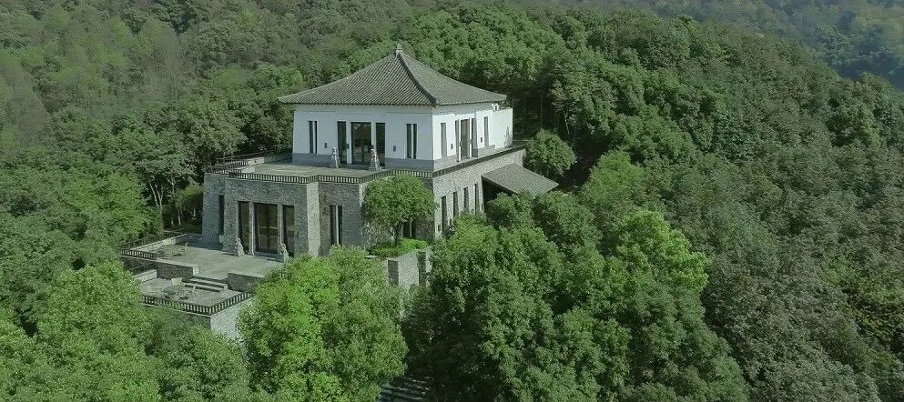
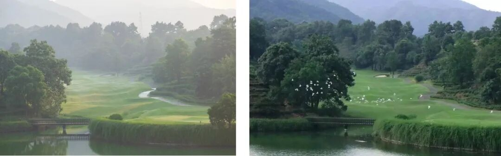
跑完3KM，神奇的事情发生了，我感到丢失的“灵气”都回来了。在大自然中跑步，会产生心流！
所谓心流，就是当你特别专注地做一件目标明确而又有挑战的事情，而你的能力恰好能接住这个挑战时，你可能会进入的一种状态。它的特征是你做这件事的时候会忘记自己，忘记时间的流逝，你能体察到所有相关的信息，不管工作多复杂你都毫不费力，而且有强烈的愉悦感。
想要体验心流，你选择的任务需要具备四个特征：
- 有一个你愿意为之付出的目标；
- 有即时回馈；
- 注意力集中；
- 选择合适的难度。
科学的跑步恰好能同时满足这四个特征。所以，当你手头上的事无法再让你处在心流中时，不如试试去大自然里跑步。
你的潜意识系统被打开，所有的清醒意识会被潜意识替代；同时，大脑将充斥着两种给人带来兴奋的化学物质，一是去甲肾上腺素，二是多巴胺。它们共同带来了注意力的提升，反应能力的提升，以及试错学习能力的提升，给人一种“如鱼得水，飘飘欲仙”之感。非常巧的是，这两种激素，不仅在人进入心流状态后会产生，跑步过程中这两种激素也在源源不断地产生。
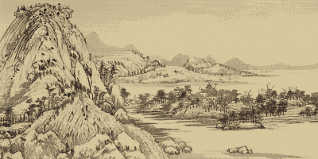
我开始理解黄公望为什么花30年走遍山河，到了82岁，忽然决定停下来，画一画这条河。又花了整整四年，86岁才完成，然后就去世了。
他凭记忆将富春江“拼接”起来，它是时间在过去与未来之间移动的一种现象，有点像法国电影的经典拍摄手法 “Montage” ，蒙太奇就是剪贴拼接的意思。所以不论是台北故宫博物院的《无用师卷》还是浙江省博物馆的《剩山图》，哪怕这幅画断成两半，我们亦无法一眼看完。
与西方美学要求用尽全力燃烧生命很不一样，黄公望的笔触是很东方的。他最好的作品70岁后才开始，就像齐白石、黄宾虹、林风眠、葛饰北斋，而不像梵高、拉斐尔、席勒、莫迪利亚尼、卡拉瓦乔之类，30岁时就流星般转瞬即逝。东方美学要求细水长流，时间才是真正的主轴，人在其中扮演的角色非常渺小。
在时间的长河里，他终于懂得无须讨好谁，也不再将时间浪费在无聊的人、无聊的事上，99%的事情都是毫无意义的，他最终决定将所有精力倾注在1%的美好事物上。
黄公望用了一生的曲折，只完成了一件事情，就是完成自我。
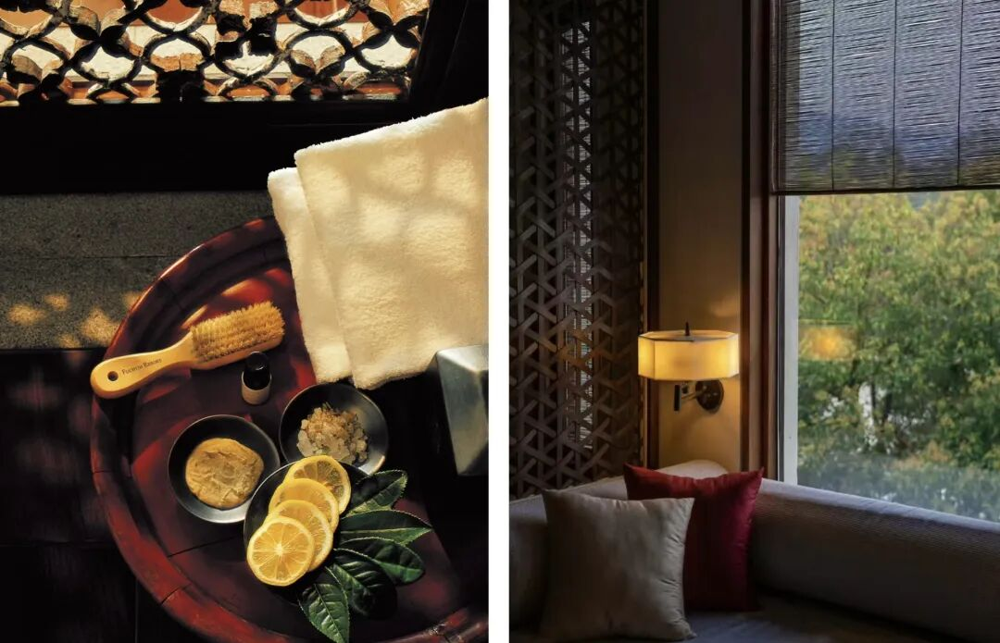
跑完步推荐去酒店的spa放松
手法和环境都很不错酒店的中餐厅大痴小馆可以补充能量根据时节菜单每季更换多为河鲜和当地蔬菜每一道菜都很好吃也不会胖
"任何事都有倦怠期做一份工作、爱一个人，生活在一个地方…… 再喜欢的事老是做也会想要停下来那就停下来把“欲望”转换成“心流”
整装再出发😁
…

2025.03.09
——
END